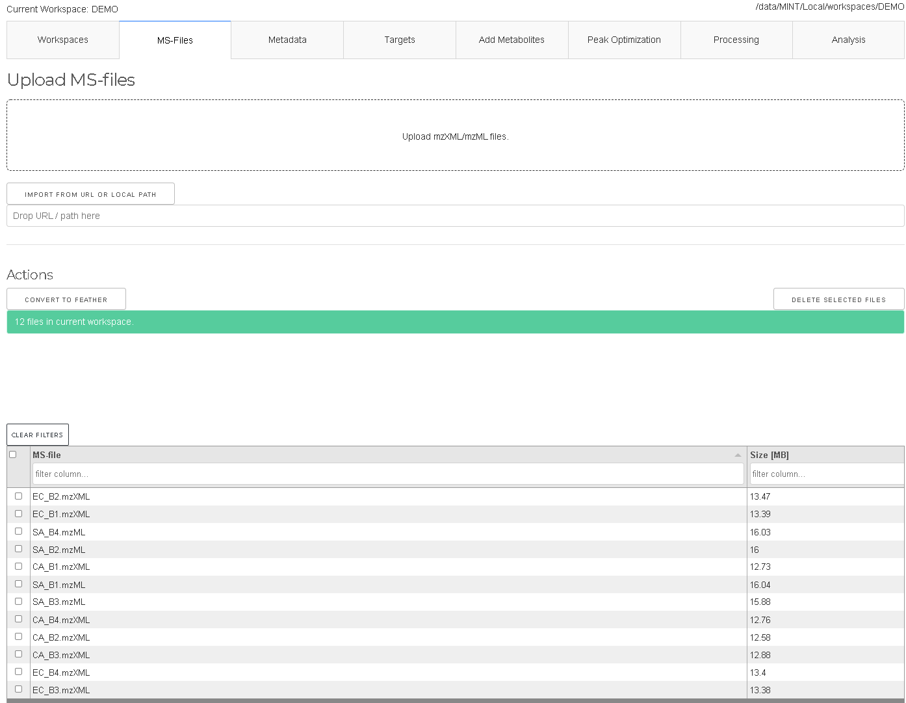
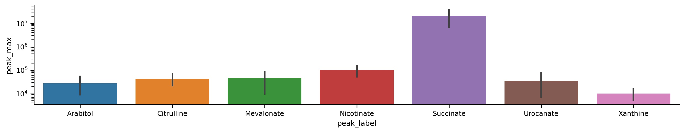
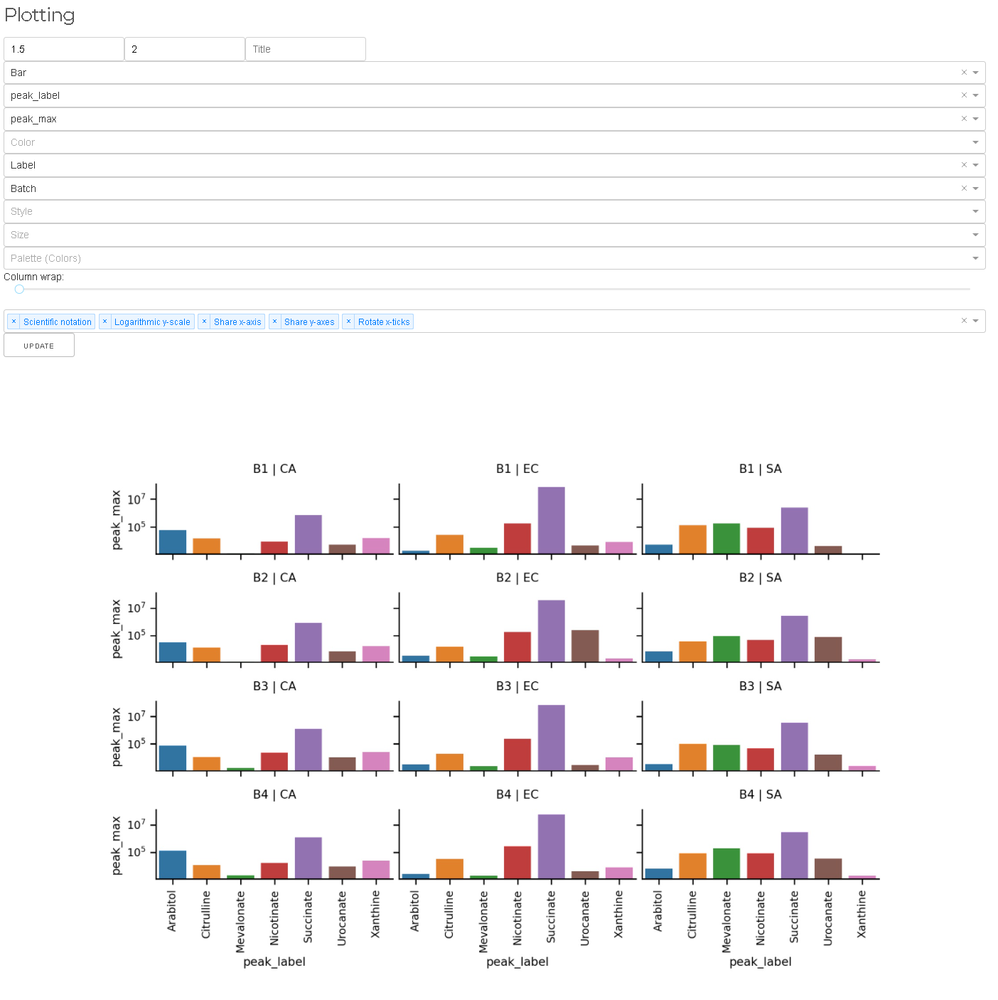

Quickstart
A demo server is available here. Be mindful, you share the server with others.
Download the demo files from Google Drive and extract the archive.
You will find two csv files and 12 mzXML and/or mzML files.
- A folder with 12 mass-spectrometry (MS) files from microbial samples. We have four files for each Staphylococcus aureus (SA), Escherichia coli (EC), and Candida albicans (CA). Each file belongs to one of four batches (B1-B4).
MINT-metadata.csvcontains this information in tabular format. Setting up the metadata for your project is essential.MINT-targets.csvcontains the extraction lists. The identification of the metabolites has been done before, so we know where the metabolites appear in the MS data.
1. Open the MINT application and create a new workspace named DEMO.
At workspaces click on CREATE WORKSPACE. Type DEMO into the text field and click on CREATE.
2. Make sure the DEMO workspace is activated, indicated by a blue bullet in the workspace table.

3. Switch to MS-Files and upload the 12 MS files.

Wait until all files are uploaded.
4. Switch to Metadata and upload MINT-metadata.csv.

This file contains information about your samples. Setting up metadata is important and needs to be done with care. Your downstream analysis will benefit greatly from a good metadata table.
PeakOptif True these files will be used in the peak optimization tab.Labelshould be used to indicate the group of the sampe. E.g. treatment group vs control group.Batchis the batch ID, for example the plate if samples come from multiple plates.Typeindicates the type for the sample. By default evertying is calledBiological Sample, other meaningful labels areStandard SampleorQuality Control.RowandColumnindicate the location of the sample on the plate e.g. 1-12 and A-H for a 96-well plate.RunOrdercan contain the order 1-N in which the samples were processed.- Add more columns if you need. You can download the file, add new columns with Excel, and upload the table again.
- Use the
actionto set multiple cell values at once.
5. Switch to Targets and upload MINT-targets.csv.

This is the data extraction protocol. This determines what data is extracted from the files. The same protocol is applied to all files. No fitting or peak optimization is done. MINT therefore requires a very stable chromatographic column and stable retention times for all files in a workspace.
6. Switch to Peak Optimization
Switch the File selection to Use all files. Normally, especially for large datasets, you should select a small representative set of samples. The peak optimization takes longer the more files are used for it and the more targets are defined. 'Click on UPDATE PEAK PREVIEWS.

- here you can see the shapes of the extracted peaks.
- optimize the retention time with the interactive tool.
- you can click on the image to load the data into the interactive tool or use the dropdown menu.
- highlight the prefered region (highlighted in green) and click on
SET RT TO CURRENT VIEWto update the retention time window. - the horizontal bar indicates how far away the selected window is from the
rtreference value in theTargets.

- if you are happy with the peak shapes you can proceed to
Processing.
6. Switch to Processing and start the data extraction with Run MINT
The extraction process is done when you get a green notification Finished running MINT.
Now, you can download the results in long-format or the dense peak_max values.
The tidy format contains all results, while the DENSE PEAK_MAX only contians the peak_max values as a matrix.
7. Switch to Analysis.
Once the results are generated the 'Heatmaptab will show an interactive heatmap.
You can change the size of the heatmap by changing your browser window andUPDATEthe plot.
The heatmap shows thepeak_max` values. The dropdown menu provides some options.
8. Switch to Analysis/Plotting
The plotting tool is very powerful, but requires some practise. It is a wrapper of the powerful seaborn API. Let's create a few simple visualizations.

And click on Update. A very simple bar-graph is shown, and we will gradually make it more complex.
This simple bar graph shows the average peak_max value across the whole dataset for all targets.
a) select peak_label for the X axis.
b) set aspect-ratio to 5.
c) select Logarithmic y-scale in the dropdown options.
d) click on UPDATE.

e) set figure height to 1.5 and aspect ratio to 2.
e) set Column to Label.
f) set Row to Batch.

This way you can look at the whole dataset at once, sliced by Batch and Label
Exercise: Try to create the following plot: